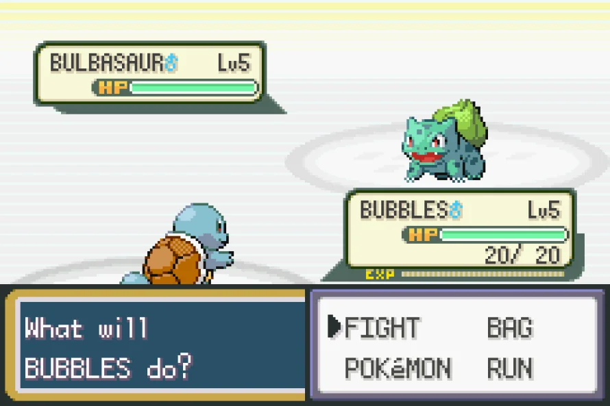
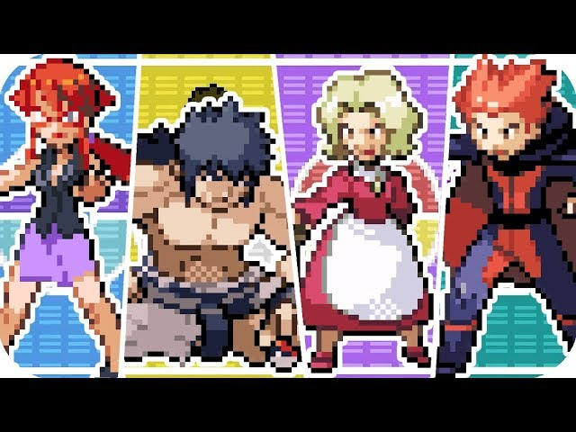

| Home | Batalhas | História | Iniciais | Imagens | Imagens | Lendários | Mapa | Links | Contato |
As batalhas são uma das principais mecânicas de Pokémon Fire Red. Durante o jogo, o treinador enfrenta pokémons selvagens e outros treinadores em combates baseados em turnos, onde estratégia e conhecimento dos tipos são essenciais para vencer.
Cada batalha exige escolhas inteligentes, como o uso correto de ataques, troca de pokémons e utilização de itens.
As batalhas em Pokémon Fire Red acontecem em turnos. Em cada rodada, o jogador pode escolher entre atacar, usar um item, trocar de pokémon ou tentar fugir (no caso de batalhas contra pokémons selvagens).
A ordem dos ataques geralmente depende da velocidade dos pokémons envolvidos. O pokémon mais rápido ataca primeiro, o que pode ser decisivo no resultado da batalha.

Cada pokémon possui um ou dois tipos, como fogo, água ou planta. Esses tipos influenciam diretamente no dano causado durante a batalha.
Por exemplo, ataques do tipo água são mais eficazes contra pokémons do tipo fogo, enquanto ataques do tipo planta são fortes contra água. Conhecer essas vantagens é essencial para vencer batalhas mais difíceis.
Ao longo do jogo, existem batalhas mais desafiadoras, como os confrontos contra líderes de ginásio e a Elite dos Quatro. Esses adversários possuem equipes mais fortes e exigem maior preparo do jogador.
Para vencer, é importante treinar seus pokémons, escolher bem os ataques e montar uma equipe equilibrada.
